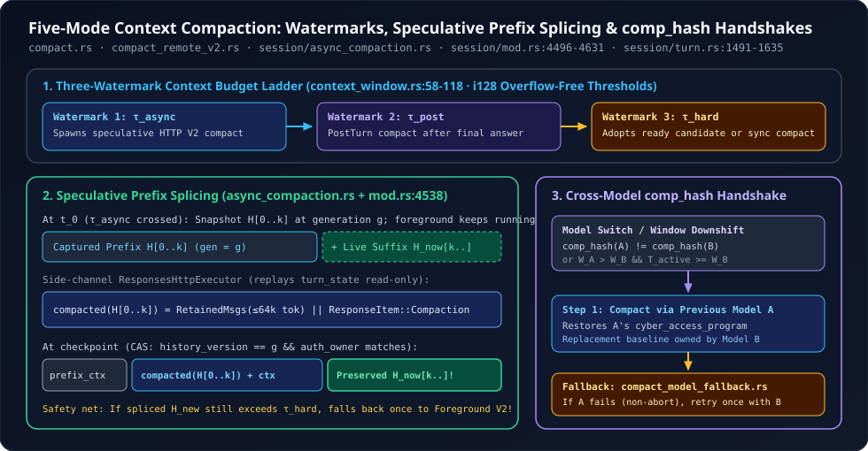

4. Five-Mode Context Compaction: Speculative Async Prefix Splicing, Post-Turn Compaction & Cross-Model comp_hash Handshakes
In a toy agent, context compaction is a twenty-line if tokens > limit { summarize(history) } check that freezes the UI for fifteen seconds mid-task and wipes out recent tool outputs. In OpenAI Codex, compaction spans ten dedicated modules (compact*.rs and session/async_compaction.rs) orchestrating five distinct compaction modes across a three-watermark token ladder—capable of compacting a prefix speculatively in the background while the foreground turn keeps running tools, hiding compaction latency behind turn boundaries, and negotiating cross-model latent state transitions via comp_hash.
1. The Three-Watermark Token Ladder & Five Compaction Modes
Inside core/src/session/context_window.rs (lines 53-118), Codex evaluates active token usage $T_{\text{active}}$ under two configurable accounting scopes: either AutoCompactTokenLimitScope::Total ($T_{\text{scope}} = T_{\text{active}}$) or BodyAfterPrefix ($T_{\text{scope}} = \max(0,\, T_{\text{active}} - T_{\text{prefill}})$), capped by the effective context window $W_{\text{eff}} = \lfloor W_{\text{ctx}} \cdot p_{\text{eff}} / 100 \rfloor$. Using overflow-free i128 integer cross-multiplication, Codex orders three escalating watermarks:
| Mode | Implementation & Source | When It Fires & What Replaces History |
|---|---|---|
| 1. Local / Inline LLM Summarization | CompactionImplementation::Responses (compact.rs:263-446) | Third-party providers or non-V2 endpoints at $\tau_{\text{hard}}$ or manual /compact. Streams SUMMARIZATION_PROMPT; retains up to 20,000 tokens of user messages + {SUMMARY_PREFIX}\n{summary}. If the compaction prompt itself hits ContextWindowExceeded, trims oldest items from the front (history.remove_first_item(), line 368) so recent context survives! |
| 2. Foreground Remote V2 | ResponsesCompactionV2 Foreground (compact_remote_v2.rs:322-505) | OpenAI V2 endpoints at $\tau_{\text{hard}}$ when no background candidate is ready. Emits exactly one server-encrypted ResponseItem::Compaction item paired with up to RETAINED_MESSAGE_TOKEN_BUDGET = 64,000 tokens of retained user/developer/client-authored items (capping each agent message at 10,000 tokens). |
| 3. Speculative Async V2 (Prefix Splicing) | AsyncCompactionState (session/async_compaction.rs:53-198) | Launched in the background once $T_{\text{active}} \ge \tau_{\text{async}}$ while the foreground turn keeps streaming and running tools; atomically splices the compacted prefix onto the live suffix at the next checkpoint! |
| 4. Post-Turn Zero-Stall Compaction | CompactionPhase::PostTurn (compact.rs:194, 396, context_window.rs:112) | Triggered after the final assistant answer is delivered when $T_{\text{active}} \ge \tau_{\text{post}}$, warming the compacted window during user reading time so the next turn starts with zero pre-turn stall. |
| 5. Token-Budget Window Reset | Feature::TokenBudget (compact_token_budget.rs:16-69) | Skips LLM summarization completely and installs a clean context window via sess.start_new_context_window, while still firing pre/post compact hooks and UI ContextCompactionItem events. |

session/mod.rs:4538-4593), and cross-model comp_hash handshakes (session/turn.rs:1491-1583).2. Speculative Async Prefix Splicing Without Stopping the Turn
Mode 3 (session/async_compaction.rs) solves one of the hardest concurrency problems in agentic harnesses: how do you compact an 80,000-token prefix over a 6-second background HTTP call while the foreground agent continues executing tools and appending new items?
Trace the choreography across async_compaction.rs, compact_remote_v2.rs, and session/mod.rs:
- Wait for Backend Model Pin (
async_compaction.rs:63-66): OnPreTurn,maybe_startrefuses to launch untilturn_state.is_some()so the foreground WebSocket establishes the server’s sticky-routing pin first. - Read-Only Sticky Routing Over Side-Channel HTTP (
compact_remote_v2.rs:295-314): Background compaction cannot share the foreground turn’s WebSocket mutex without blocking streaming tool steps. Instead, it clones the capturedturn_statestring into a throwawayArc<OnceLock<String>>and executes overResponsesHttpExecutor—achieving GPU KV-cache affinity on the same backend replica without mutating foreground WebSocket continuation state! - Atomic CAS Prefix Splicing (
session/mod.rs:4538-4578): Suppose background compaction captured prefix $H[0..k]$ at history version $g$, and while it ran, the foreground agent appended live tool calls and outputs $S_{\text{live}} = H_{\text{now}}[k..]$. Whentake_readyorwait_for_pendingadopts the candidate,replace_compacted_historyre-validates $g$, $k$, andauth_owner_generationunder the session mutex and splices the compacted prefix directly ahead of the untouched live suffix:
// codex-rs/core/src/session/mod.rs (lines 4548-4577, condensed)
// Validate immediately before slicing and replacing the captured prefix.
if state.history.history_version() != prefix.generation
|| state.history.annotated_items().len() < prefix.len
|| self.services.model_client.auth_owner_generation() != prefix.auth_owner_generation
{
return false;
}
let current = state.history.annotated_items();
let suffix = ¤t[prefix.len..];
if suffix.iter().any(|envelope| {
crate::compact_retained_tool_outputs::is_retained_tool_output(envelope)
|| compact::is_real_user_or_agent_message(&envelope.item)
}) {
items.extend(initial_context);
} else {
items = compact::insert_initial_context_before_last_real_user_or_summary(items, initial_context);
}
items.splice(0..0, prefix_context.into_iter().map(ResponseItemEnvelope::new));
items.extend_from_slice(suffix);
if let Some(checkpoint) = state.history.world_state_checkpoint() {
world_state_baseline = WorldStateSnapshot::from(&checkpoint.state);
}Even better: what if a tool dumped 90,000 tokens into $S_{\text{live}}$ while background compaction was running, leaving the newly spliced history still over $\tau_{\text{hard}}$? Lines 42-54 of compact_remote_v2_installation.rs re-check context_window_token_status immediately after prefix adoption and, if status.token_limit_reached is still true, seamlessly fall back once to a full foreground compaction!
3. Cross-Model comp_hash Handshakes & cyber_access_program Pairing
Unlike Mode 1’s human-readable Markdown summary, Remote V2’s ResponseItem::Compaction carries an opaque encrypted state blob whose internal format is tied to a specific model compatibility family—advertised in model metadata as ModelInfo.comp_hash. What happens when a user switches mid-session from Model $A$ to Model $B$?
Inside maybe_run_previous_model_inline_compact (session/turn.rs:1491-1583), Codex detects two cross-model hazards before Turn $B$ samples:
CompactionReason::CompHashChanged: Both models declarecomp_hashvalues and $\text{comp\_hash}(A) \neq \text{comp\_hash}(B)$.CompactionReason::ModelDownshift: The user switched from a larger-window model to a smaller-window model ($W_A > W_B$) and $T_{\text{active}}$ already exceeds $W_B$’s auto-compact or full context window!
// codex-rs/core/src/session/turn.rs (lines 1518-1529 & 1564-1581, condensed)
let mut previous_model_turn_context = turn_context
.with_model(previous_model.clone(), &sess.services.models_manager)
.await;
// `with_model` preserves the current turn's access program. Restore the previous
// turn's program so compaction uses the same model/cyber_access_program pair as that turn.
previous_model_turn_context.cyber_access_program = cyber_access_program::for_provider(
&previous_model_turn_context.config,
previous_turn_settings.cyber_access_program,
);
let step_context = sess
.capture_step_context(Arc::new(previous_model_turn_context), cancellation_token)
.await?;
// The previous model summarizes the old window; the current model owns its replacement.
let replacement_step_context = sess
.capture_speculative_step_context(Arc::clone(turn_context), cancellation_token)
.await?;Notice the split-context design (step_context vs. replacement_step_context): Model $A$ compacts the old window (using Model $A$’s restored cyber_access_program so the backend never rejects a mismatched (model_A, program_B) header pair!), while Model $B$ owns the replacement WorldState and TurnContextItem! And if Model $A$’s endpoint errors out (e.g., temporary capacity outage or deprecated model slug), should_retry_with_current_model (compact_model_fallback.rs:10-33) automatically retries compaction once using Model $B$ and records codex.compaction.model_fallback telemetry.
4. Concurrent User-Goal Edits & Checkpoint Lineage
Two final invariants in Session::replace_compacted_history (session/mod.rs:4508-4640) ensure compaction never silently drops state:
- Out-of-Band User Goal Edits (
session/mod.rs:4598-4618): Users or UI clients can publishUserGoalUpdateedits asynchronously while a full foreground compaction (CompactedHistoryInstallation::Complete) is running. Codex snapshotsinput_goal_idsbefore compaction starts and, before swapping the history, appends anyUserGoalUpdateitems in live history whose IDs were neither ininput_goal_idsnor inreplacement_goal_ids—preserving concurrent user steering in exact arrival order! - Multi-Subsystem Checkpoint Atomicity (
session/mod.rs:4631-4640): Every persistedCompactedItematomically bundlesreplacement_history,guardian_history(so safety supervision retains provenance across compactions),retained_context,mcp_resource_origins,mcp_attribution, and theAutoCompactWindowIdslineage chain (window_number,first_window_id,previous_window_id).
5. Questions worth answering
collect_compaction_output (compact_remote_v2.rs:389-394) use a biased tokio::select! polling stream.next() before cancellation.cancelled() on background compactions?If a background compaction finishes in the same tick that session shutdown cancels shutdown_cancellation, polling stream.next() first ensures ResponseEvent::Completed is drained and its token consumption is accurately charged to record_rollout_budget_usage rather than lost!
async_compaction::maybe_start (async_compaction.rs:117, 126) acquire a TaskTracker token inside sess.state.lock() before running prepared_input.await outside the lock?Acquiring launch = tasks.token() before dropping the mutex guarantees that if session shutdown runs in the tiny window while prepared_input.await is normalizing history outside the lock, async_compaction::shutdown’s tasks.wait().await will still wait for the launch to finish or cancel cleanly—preventing orphan background tasks after shutdown.